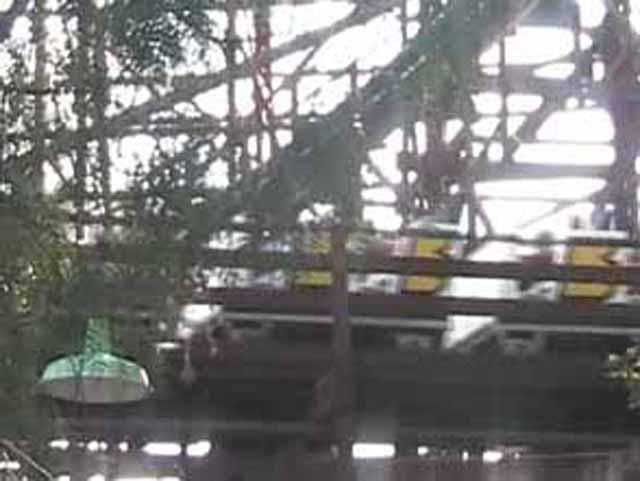
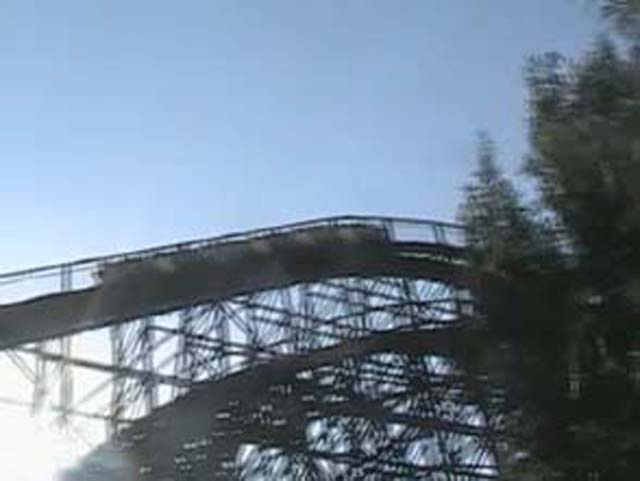
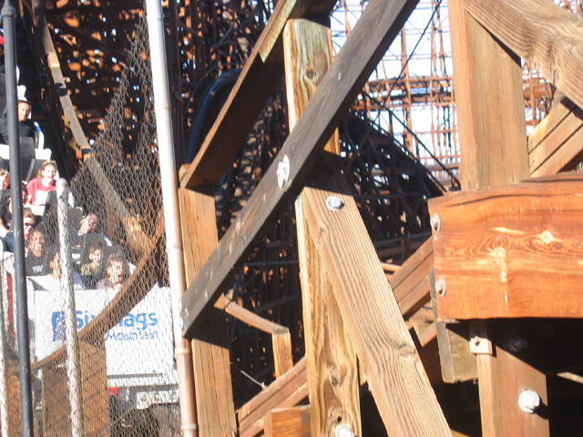

| |

Psyclone Review

For todays review, we're going to travel back in time to review Magic Mountains dead woodie, Psyclone. Ok, so now we're back in time to December of 2006. When I last rode Psyclone and just a couple weeks before this god awful coasters death. So we climbed into the awful seats for the last time for our last ride on Psyclone (Well, we climbed into those seats again when riding Collosus backwards, but you get the idea). The train was dispatched and we went straight into a smelly dark tunnel. After that, we went and climbed the lifthill. The terror was building up in everyone. everyone knew of the torture that lay ahead of them (Well, except for Freaking Cody). Then, we drop. We feel some jackhammering at the bottom of the drop, but it's not so bad. Then we rise up into the turnaround where the worst part of the ride is about to happen. As we turn, you get slammed to the side. It also hurts your ears as you squeak on by. After that, you dive back underneath the structure. Then more jackhammering pursues as you rise up and hit some heavy trims. However, the trims don't do anything as we dive back down and fly by the station. And then we twist up into a turnaround. The jackhammering and shaking doesn't stop. It just keeps on RATTLING AND RATTLING! Then we dive back down into the structure where more pain awaits us. We go up into a bunny hop. However, I can't even remember or see if there was airtime there. When I look back at the POV from that day, it's hard to tell. Then we go up and into another turnaround. And while this is still happening, jackhammering is also still continuing. Then we dive under the station. Then we shake into another turnaround. The Jackhammering continues and we just are lost either because we're ignoring where we are or because we're surrounded by the ride's structure. Then we go through some more shakey bunny hops. However, those do no good. Then we go through a final turn into the brake run. And after that, you just say, "OMG! I have a headache!" Or in Cody's case, "That was awsome!" I'm glad this coaster is dead because it was a waste of space and Terminator is a much better ride.
4/10
Location: Six Flags Magic Mountain
Opened: 1991
Died: January 2007
Built by: Dinn Coorperation
Last Ridden: December 28, 2006
Psyclone Photos





Home
|